10/30（五）・住大阪
勝尾寺＋箕面大瀑布＋箕面溫泉 一日遊（從天下茶屋出發）
8 點搶先參拜達磨古寺，走山路到瀑布，滝道散步後泡新開幕溫泉
- 萱野南口搭計程車，先裝好GO App
- 勝尾寺到瀑布沒巴士，要走約4公里
- 溫泉買入館券付午餐吃到飽，先到先受理
07:0107:01🚇地鐵直通到箕面萱野大國町同月台對面轉乘；確認行先是「箕面萱野」
- 07:01四つ橋線 西梅田行 → 大國町 07:05
- 07:01四つ橋線 西梅田行 → 大國町 07:05
🚇 四つ橋線→御堂筋線（直通北急）｜岸里 → 大國町轉 → 箕面萱野｜約43分｜580円｜IC可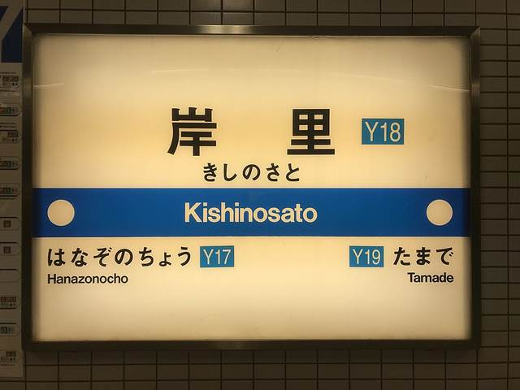
岸里站站名標（Y18）そらみみ, CC BY-SA 4.0, https://commons.wikimedia.org/wiki/File:Kishinosato_Station_Sign.jpg 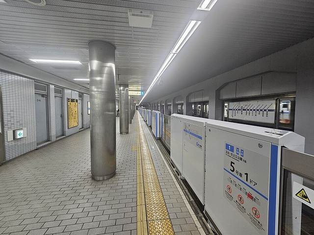
岸里站月台Niiryoku2910, CC BY-SA 4.0, https://commons.wikimedia.org/wiki/File:Kishinosato_station_platform.jpg 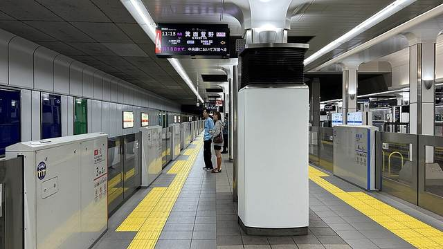
大國町 4 號線（御堂筋線北行）NatsuTV, CC0, https://commons.wikimedia.org/wiki/File:大阪メトロ大国町駅4番線ホーム.jpg 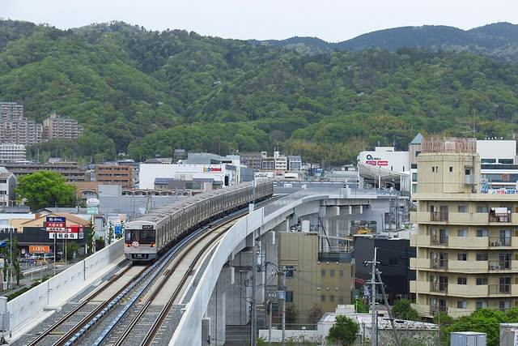
北急高架段與箕面山さりと, CC BY-SA 4.0, https://commons.wikimedia.org/wiki/File:Kita-osaka_kyuko_Namboku_Line_between_Minoh-kayano_and_Minoh-semba_handai-mae.jpg 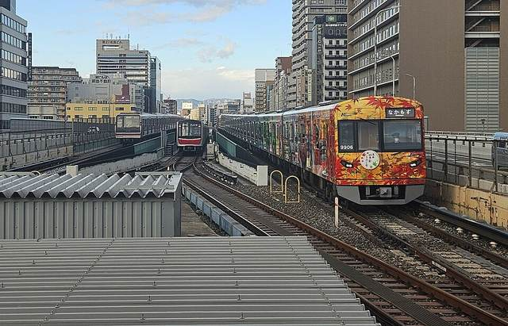
北急「箕面四季彩紅葉號」Niiryoku2910, CC0, https://commons.wikimedia.org/wiki/File:Kitakyu_series9000_Minoh-shikisaimomiji.jpg 購票・進站・轉乘（點一步看照片）🚇 走到岸里2號出口
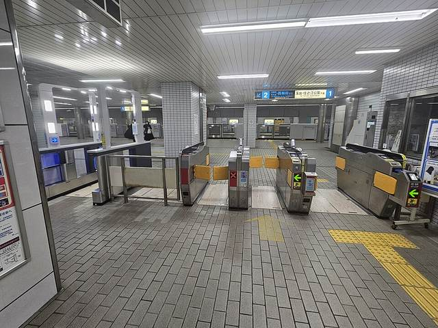
岸里站剪票口・Niiryoku2910, CC BY-SA 4.0, https://commons.wikimedia.org/wiki/File:Kishinosato_station_south-east_ticket_gate.jpg 1. 出住宿走到岸里站 2 號出口（約 5 分），下樓梯到剪票口。
🎫 刷IC或買580円票
要找的標示：箕面萱野
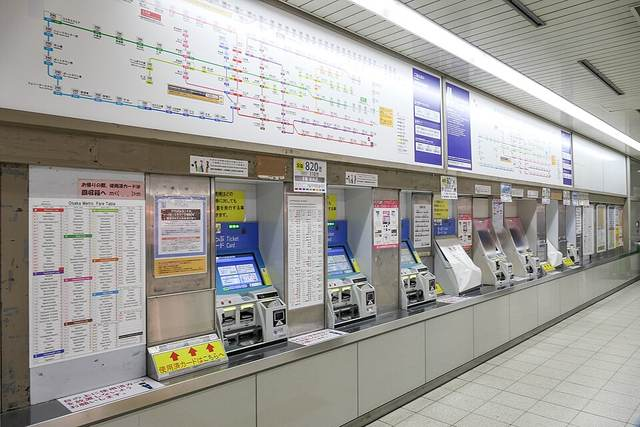
Osaka Metro 售票機・MaedaAkihiko, CC0, https://commons.wikimedia.org/wiki/File:Osaka-metro_Nakamozu-STA_Ticket.jpg 2. 有 IC 卡直接刷；沒 IC 卡就在售票機選中文／English，按 580 日圓（票價表上找「箕面萱野」）。
🚆 2號線坐2站到大國町
要找的標示：西梅田
岸里站月台・Niiryoku2910, CC BY-SA 4.0, https://commons.wikimedia.org/wiki/File:Kishinosato_station_platform.jpg 3. 下到月台，搭往「西梅田」方向（2 號線），坐 2 站到大國町。
🔁 大國町對面轉4號線
要找的標示：御堂筋線
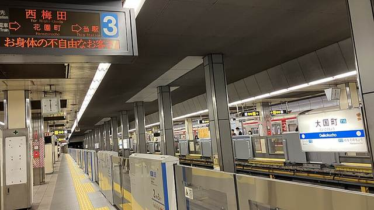
大國町 3 號線（四つ橋線到站）・小田急4000系ファン, CC BY-SA 4.0, https://commons.wikimedia.org/wiki/File:大国町駅ホーム.jpg 4. 大國町在 3 號線下車，不要上樓：同一月台對面就是 4 號線御堂筋線，搭「箕面萱野」行。
🚆 坐到終點箕面萱野
要找的標示：箕面萱野
大國町 4 號線（御堂筋線北行）・NatsuTV, CC0, https://commons.wikimedia.org/wiki/File:大阪メトロ大国町駅4番線ホーム.jpg 5. 確認月台電子看板寫「箕面萱野」，上車後坐到終點（約 38 分）。
ℹ️ 直通北急免出站
北急高架段與箕面山・さりと, CC BY-SA 4.0, https://commons.wikimedia.org/wiki/File:Kita-osaka_kyuko_Namboku_Line_between_Minoh-kayano_and_Minoh-semba_handai-mae.jpg 6. 過江坂後列車直通北大阪急行，票價會一起算，不必另外買票或出站。
更多說明
06:50 出門，步行約 5 分到地下鐵四つ橋線「岸里」站 1 號出口。比原稿的天下茶屋更好：岸里走過去差不多近，但在大國町是「同一月台對面轉乘」（四つ橋線 3 號線下車 → 對面 4 號線御堂筋線），不用上下樓梯，而且早 5–7 分到箕面萱野。搭 07:01 四つ橋線「西梅田行」2 站到大國町，轉 07:06（假日 07:08）御堂筋線「箕面萱野行」，一路坐到終點，過江坂後自動直通北大阪急行，不用下車。
- 路線
- Osaka Metro 四つ橋線 → 大國町轉 御堂筋線（直通北大阪急行）
- 區間
- 岸里 → 箕面萱野
- 上車
- 岸里站 2 號線（往西梅田）；大國町 3 號線下車 → 對面 4 號線上車（往箕面萱野）
- 方向
- 西梅田 方向 → 御堂筋線 箕面萱野 方向
- 班次
- 平日：07:01 西梅田行 → 大國町 07:05；07:06 箕面萱野行 → 07:44。假日：07:01 → 大國町 07:05；07:08 箕面萱野行 → 07:45。下一班平日 07:06 → 07:49、假日 07:06 → 07:52
- 票價
- 580 日圓（Osaka Metro＋北大阪急行合併計價，IC 與車票同價）
- IC 卡
- ICOCA／Suica／PiTaPa 等交通 IC 卡直接刷，出站時自動扣地鐵＋北急合計 580 日圓
- 有 IC 卡：岸里站剪票口直接刷卡進站；餘額建議至少 2,000 日圓（今天還要刷巴士／阪急）
- 沒有 IC 卡：售票機按「English／中文」→ 在票價表找「箕面萱野 Minoh-kayano」（北急各站也列在地鐵票價表上）→ 買 580 日圓車票
- 御堂筋線請確認行先顯示「箕面萱野」；若搭到「千里中央」行，在千里中央同月台換下一班箕面萱野行
- 大國町同月台對面轉乘，最輕鬆
- 一路坐到終點，不用找轉乘月台
- 早上 7 點多往梅田方向的車開始變擠，過梅田、新大阪後就空了
- 原稿天下茶屋方案也可以（見「其他方案」），但動物園前要上下樓轉乘
07:0207:03🚇備案：天下茶屋出發走地鐵堺筋線剪票口（非南海）；動物園前要上下樓轉乘
- 07:01四つ橋線 西梅田行 → 大國町 07:05
- 07:06大國町對面轉御堂筋線 箕面萱野行 → 07:44 箕面萱野
- 07:01四つ橋線 西梅田行 → 大國町 07:05
- 07:08大國町對面轉御堂筋線 箕面萱野行 → 07:45 箕面萱野
🚇 堺筋線→御堂筋線｜天下茶屋 → 動物園前轉 → 箕面萱野｜約47分｜580円｜IC可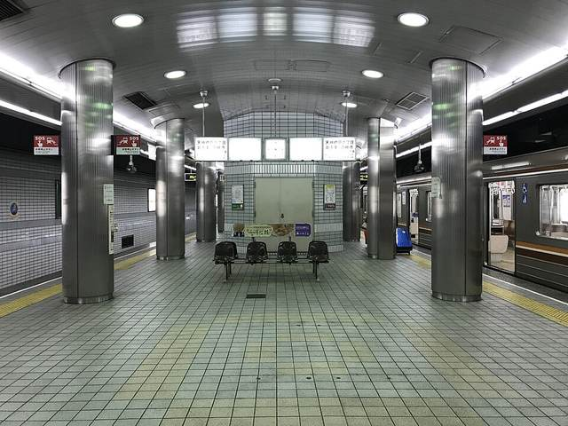
天下茶屋站堺筋線月台そらみみ, CC BY-SA 4.0, https://commons.wikimedia.org/wiki/File:Platform_of_Tengachaya_Station_(Sakaisuji_Line).jpg 購票・進站・轉乘（點一步看照片）🎫 走堺筋線剪票口
要找的標示：堺筋線
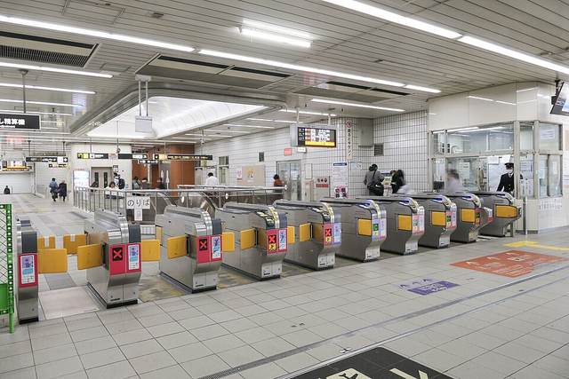
天下茶屋站剪票口・MaedaAkihiko, CC0, https://commons.wikimedia.org/wiki/File:Osaka-Metro_Tengachaya-STA_Gate.jpg 1. 天下茶屋走地下鐵堺筋線剪票口（不是南海），刷 IC 或買 580 日圓票。
🔁 動物園前轉御堂筋線
要找的標示：箕面萱野
天下茶屋站堺筋線月台・そらみみ, CC BY-SA 4.0, https://commons.wikimedia.org/wiki/File:Platform_of_Tengachaya_Station_(Sakaisuji_Line).jpg 2. 搭第一班出發的車坐 1 站到動物園前，下車轉御堂筋線往箕面萱野。
更多說明
原稿走法也可行，同樣 580 日圓、轉 1 次，只是比岸里方案晚 5–7 分到，而且動物園前要從堺筋線月台走到御堂筋線月台（不出站，約 3–5 分，有樓梯／電扶梯）。天下茶屋是堺筋線起點站，一定有位子坐到動物園前。
- 路線
- Osaka Metro 堺筋線 → 動物園前轉 御堂筋線（直通北大阪急行）
- 區間
- 天下茶屋 → 箕面萱野
- 上車
- 天下茶屋站（平日 3 號線／假日 2 號線，以看板為準）；動物園前 御堂筋線 2 號線（往梅田・箕面萱野）
- 方向
- 堺筋線 北千里／高槻市方向 → 御堂筋線 箕面萱野 方向
- 班次
- 平日：07:02 堺筋線 高槻市行 → 動物園前 07:04；07:08 御堂筋線 箕面萱野行 → 07:49。假日：07:03 北千里行 → 07:05；07:13 箕面萱野行 → 07:52
- 票價
- 580 日圓（IC 與車票同價）
- IC 卡
- IC 卡直接刷；轉乘不出站
- 天下茶屋站有南海與地鐵兩個剪票口：走「Osaka Metro 堺筋線」的剪票口
- 售票機買 580 日圓（票價表找「箕面萱野」）
- 堺筋線只坐 1 站，在動物園前一定要下車
- 動物園前下車後跟紅色「御堂筋線 Midosuji Line」指標，到往「梅田・新大阪・千里中央」方向的月台
07:5007:50🚕計程車上勝尾寺招呼站沒車就用GO／DiDi叫車；巴士首班9:00太晚
- 07:50南剪票口出站，搭計程車上山（約 15 分）
- 07:50南剪票口出站，搭計程車上山（約 15 分）
🚕 計程車｜箕面萱野 南口タクシーのりば → 勝尾寺山門｜約15分｜約3,000円/車｜多可刷卡・IC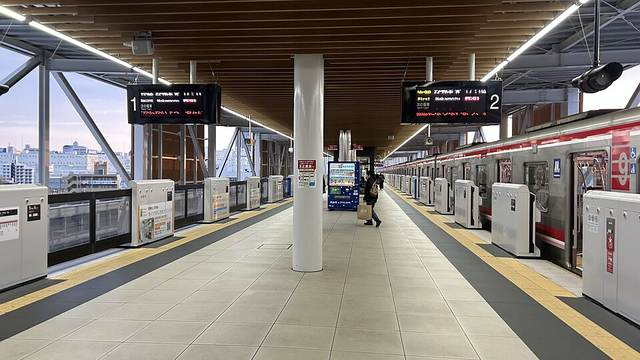
箕面萱野站月台NatsuTV, CC0, https://commons.wikimedia.org/wiki/File:北大阪急行箕面萱野駅ホーム.jpg 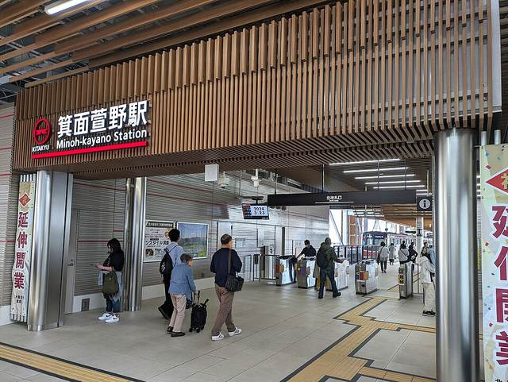
箕面萱野站入口Suikotei, CC BY 4.0, https://commons.wikimedia.org/wiki/File:Minoh-Kayano_Station_20240502_01.jpg 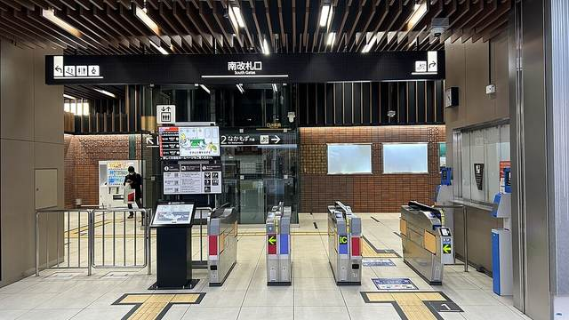
箕面萱野站南剪票口NatsuTV, CC0, https://commons.wikimedia.org/wiki/File:北大阪急行箕面萱野駅南改札口.jpg 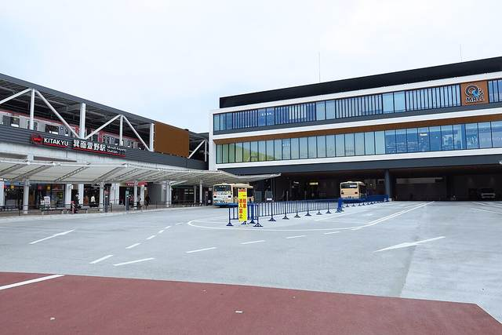
站前北側巴士總站さりと, CC BY-SA 4.0, https://commons.wikimedia.org/wiki/File:Kitakyu_Minoh-kayano_Station,bus_terminal.jpg 購票・進站・轉乘（點一步看照片）🗺 跟南改札指標
要找的標示：南改札口
箕面萱野站月台・NatsuTV, CC0, https://commons.wikimedia.org/wiki/File:北大阪急行箕面萱野駅ホーム.jpg 1. 箕面萱野是終點站，下車後跟著「南改札口 South Gate」指標走。
🚪 刷IC出站扣580円
箕面萱野站南剪票口・NatsuTV, CC0, https://commons.wikimedia.org/wiki/File:北大阪急行箕面萱野駅南改札口.jpg 2. 南剪票口刷 IC（或插車票）出站，扣款 580 日圓。
🗺 排隊搭計程車
要找的標示：タクシーのりば
3. 出站就是南側交通廣場，有屋頂的「タクシーのりば」排隊上車。
🚌 改搭巴士8號站牌
要找的標示：北改札口
站前北側巴士總站・さりと, CC BY-SA 4.0, https://commons.wikimedia.org/wiki/File:Kitakyu_Minoh-kayano_Station,bus_terminal.jpg 4. 若改搭巴士：走「北改札口」到北側巴士總站 8 號站牌，刷 IC 從中門上車、前門下車時再刷一次。
更多說明
到箕面萱野後走「南改札口（南剪票口）」出站，旁邊就是南側交通廣場的計程車乘車處（タクシーのりば）。勝尾寺官網寫計程車約 15 分、車資約 3,000 日圓（一車）。第一班往勝尾寺的阪急巴士要 9:00 才開，所以想 8 點開門就到，只能搭計程車；這也是原稿最聰明的地方，保留。上車跟司機說「勝尾寺まで お願いします（かつおうじ）」。
- 路線
- 計程車（タクシー）
- 區間
- 箕面萱野站 南側交通廣場 → 勝尾寺 山門前
- 上車
- 南改札口出站即到「タクシーのりば」
- 方向
- 往北上山（府道 4 號）
- 班次
- 隨到隨搭；約 15 分
- 票價
- 約 3,000 日圓／車（勝尾寺官網估算；2 人分攤每人約 1,500）
- IC 卡
- 大阪計程車多數可刷信用卡、交通 IC；以車上貼紙為準
- 走南改札口出站，出口外就是計程車招呼站，排隊上車
- 給司機看：「勝尾寺まで お願いします」
- 如果招呼站沒有車：開 GO 或 DiDi App 叫車（上車地點選「箕面萱野駅 南側交通広場」）；或在站內等第一班 9:00 巴士
- 8 點開門就進場，境內幾乎沒人，最好拍
- 南側交通廣場 5:00 起開放，有核准的計程車待機場；但 7 點多是否一定有車無法保證，建議前一晚先裝好 GO App
- 巴士替代：阪急巴士 30 系統「箕面萱野駅 → 勝尾寺」從北側交通廣場 8 號站牌開，首班 9:00，之後約每 10 分（含臨時直行便），車程約 22 分，大人 800 日圓。2026/10/1 起完全不收現金，只能刷交通 IC，或在 8 號站牌向巴士引導員買專用車票（只收信用卡）
08:0508:05📍勝尾寺參拜入山500円；請勝ちダルマ寫願望點眼，境內階梯多
- 08:05勝尾寺：山門・本堂・達磨・多寶塔・二階堂
- 08:05勝尾寺（週六開到 18:00；9 點後團客漸多）
勝尾寺山門正面Chris Gladis, CC BY 2.0, https://commons.wikimedia.org/wiki/File:Katsuo-ji_main_gate.jpg 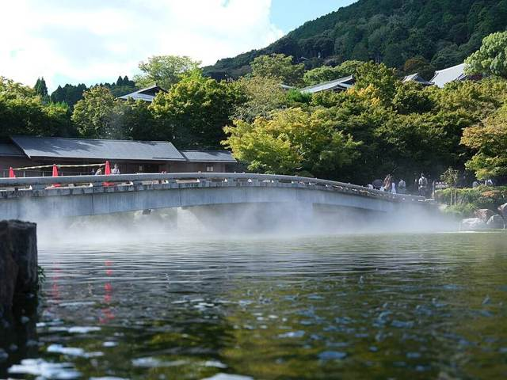
山門前的橋與池Don Ramey Logan, CC BY 4.0, https://commons.wikimedia.org/wiki/File:Bridge_at_Katsuo-ji_Osaka_Japan_by_Don_Ramey_Logan.jpg 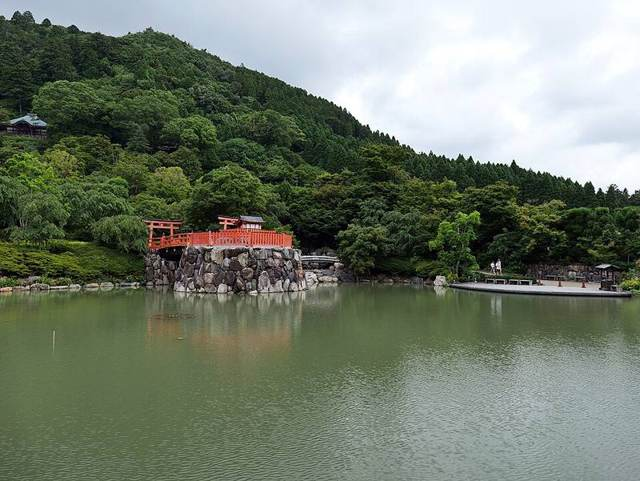
弁天池與弁天堂Hyppolyte de Saint-Rambert, CC BY 4.0, https://commons.wikimedia.org/wiki/File:Katsuō-ji_(Minoh_Osaka)_Temple_hdsr_S5_bp01.jpg 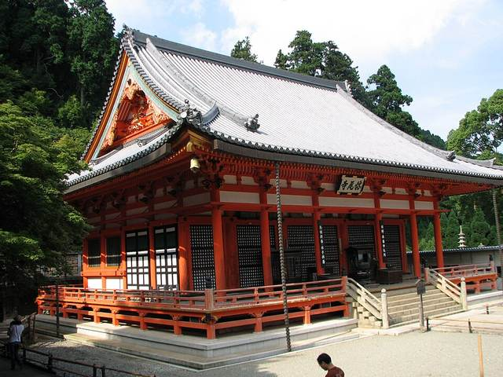
勝尾寺本堂Chris Gladis, CC BY 2.0, https://commons.wikimedia.org/wiki/File:Katsuo-ji_main_hall.jpg 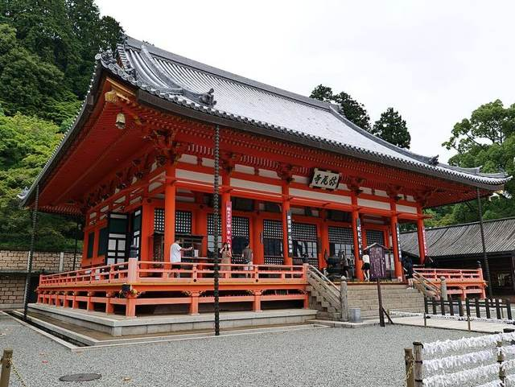
本堂Hyppolyte de Saint-Rambert, CC BY 4.0, https://commons.wikimedia.org/wiki/File:Katsuō-ji_(Minoh_Osaka)_Temple_hdsr_S5_hn01.jpg 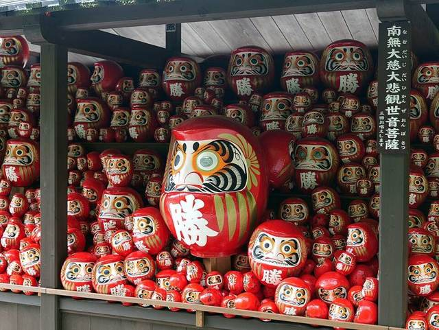
堆滿勝運達磨的奉納架Hyppolyte de Saint-Rambert, CC BY 4.0, https://commons.wikimedia.org/wiki/File:Katsuō-ji_(Minoh_Osaka)_Temple_hdsr_S5_dv04.jpg 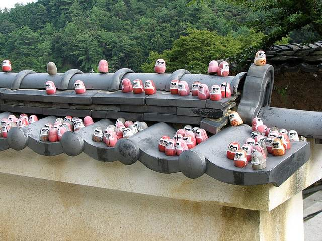
屋瓦上的小達磨Chris Gladis, CC BY 2.0, https://commons.wikimedia.org/wiki/File:Katsuo-ji_daruma_on_roof.jpg 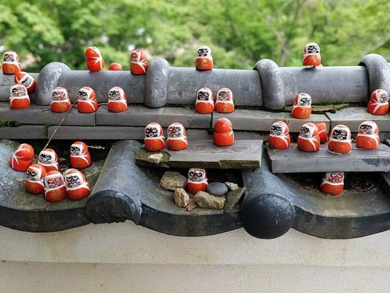
屋瓦上排滿小達磨Hyppolyte de Saint-Rambert, CC BY 4.0, https://commons.wikimedia.org/wiki/File:Katsuō-ji_(Minoh_Osaka)_Temple_hdsr_S5_da17.jpg 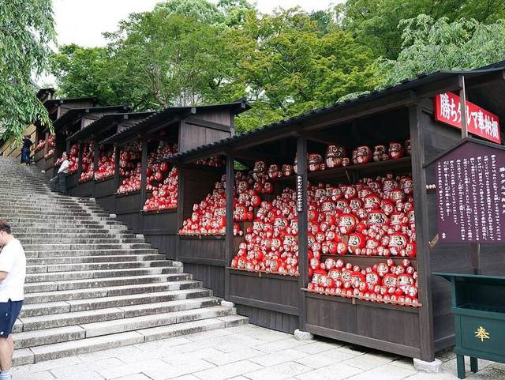
石階旁的達磨奉納棚Hyppolyte de Saint-Rambert, CC BY 4.0, https://commons.wikimedia.org/wiki/File:Katsuō-ji_(Minoh_Osaka)_Temple_hdsr_S5_dv06.jpg 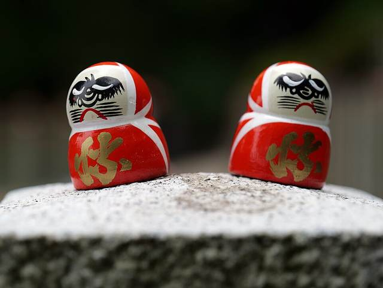
勝運小達磨Hyppolyte de Saint-Rambert, CC BY 4.0, https://commons.wikimedia.org/wiki/File:Katsuō-ji_(Minoh_Osaka)_Temple_hdsr_S5_da10.jpg 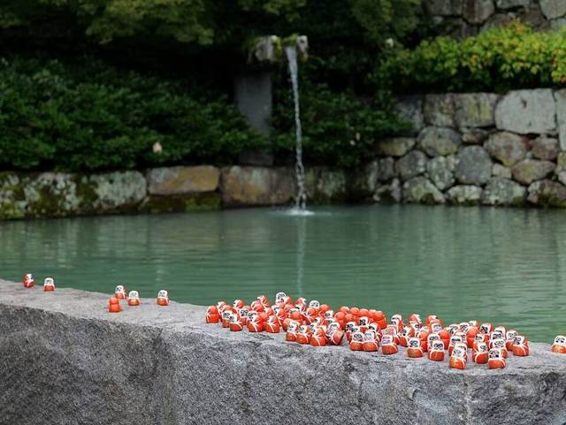
池畔石上的達磨Hyppolyte de Saint-Rambert, CC BY 4.0, https://commons.wikimedia.org/wiki/File:Katsuō-ji_(Minoh_Osaka)_Temple_hdsr_S5_da07.jpg 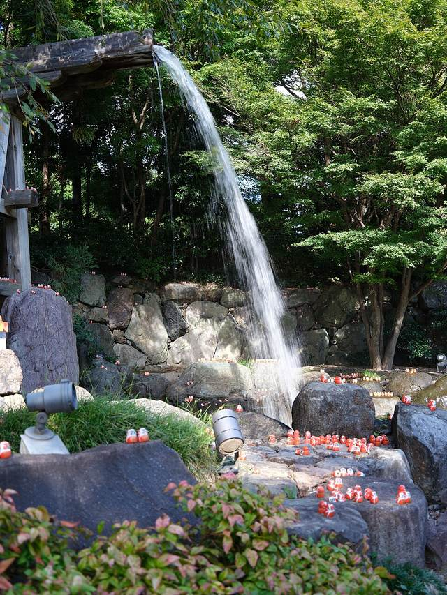
境內小瀑布與達磨WPPilot, CC BY-SA 4.0, https://commons.wikimedia.org/wiki/File:Katsuo-ji_Temple_Red_Daruma_dolls_scattered_across_the_rocks_by_Don_Ramey_Logan.jpg 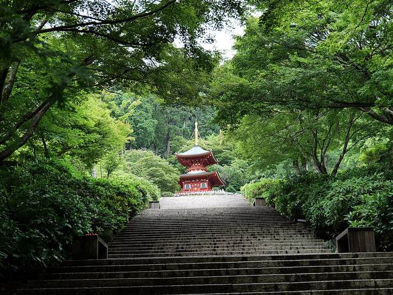
通往多寶塔的石階Hyppolyte de Saint-Rambert, CC BY 4.0, https://commons.wikimedia.org/wiki/File:Katsuō-ji_(Minoh_Osaka)_Temple_hdsr_S5_th01.jpg 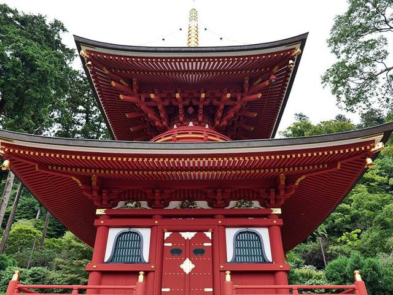
朱紅多寶塔Hyppolyte de Saint-Rambert, CC BY 4.0, https://commons.wikimedia.org/wiki/File:Katsuō-ji_(Minoh_Osaka)_Temple_hdsr_S5_th11.jpg 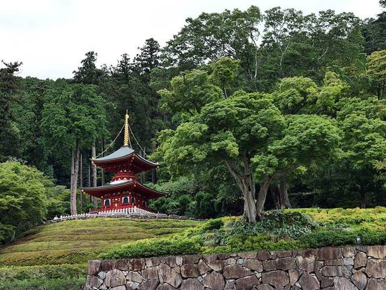
綠意中的多寶塔Hyppolyte de Saint-Rambert, CC BY 4.0, https://commons.wikimedia.org/wiki/File:Katsuō-ji_(Minoh_Osaka)_Temple_hdsr_S5_th34.jpg 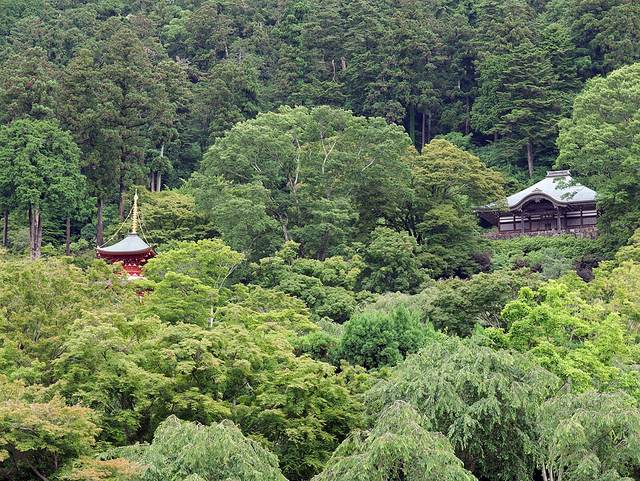
俯瞰境內與多寶塔Hyppolyte de Saint-Rambert, CC BY 4.0, https://commons.wikimedia.org/wiki/File:Katsuō-ji_(Minoh_Osaka)_Temple_hdsr_S5_sw01.jpg 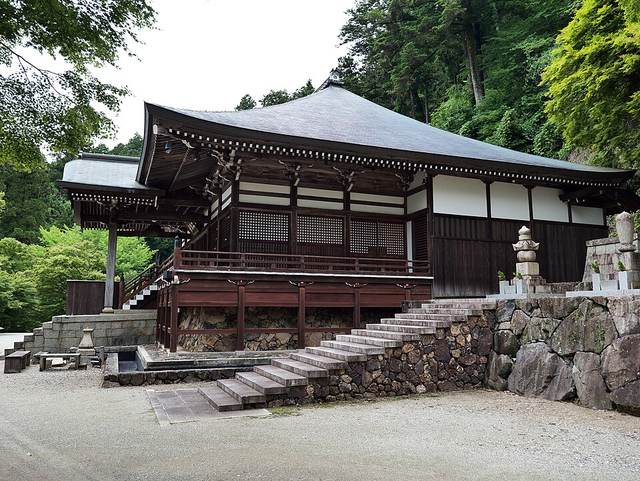
二階堂Hyppolyte de Saint-Rambert, CC BY 4.0, https://commons.wikimedia.org/wiki/File:Katsuō-ji_(Minoh_Osaka)_Temple_hdsr_S5_nk01.jpg 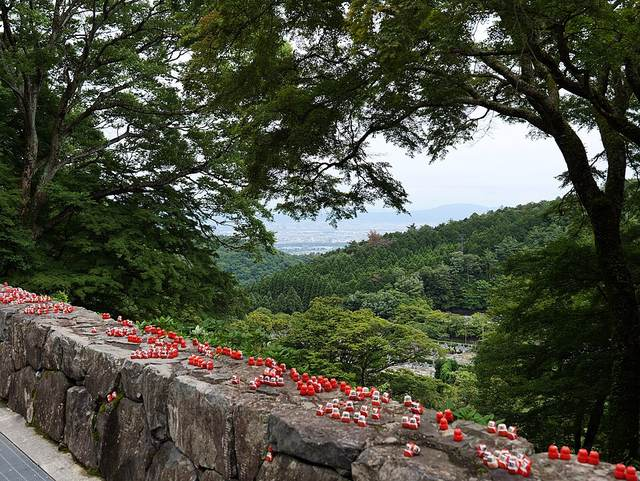
石牆達磨與遠山Hyppolyte de Saint-Rambert, CC BY 4.0, https://commons.wikimedia.org/wiki/File:Katsuō-ji_(Minoh_Osaka)_Temple_hdsr_S5_nk03.jpg 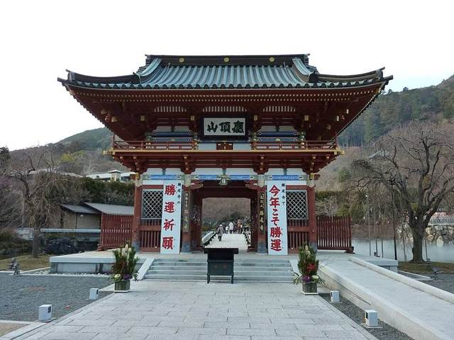
勝尾寺山門K3JACK, CC BY-SA 3.0, https://commons.wikimedia.org/wiki/File:勝尾寺山門.jpg 購票・進站・轉乘（點一步看照片）💴 付入山費500円
要找的標示：受付
勝尾寺山門正面・Chris Gladis, CC BY 2.0, https://commons.wikimedia.org/wiki/File:Katsuo-ji_main_gate.jpg 1. 山門旁的受付付入山志納料 500 日圓（現金；或出示 Web 入山券 QR）。
ℹ️ 本堂旁請勝運達磨
勝運小達磨・Hyppolyte de Saint-Rambert, CC BY 4.0, https://commons.wikimedia.org/wiki/File:Katsuō-ji_(Minoh_Osaka)_Temple_hdsr_S5_da10.jpg 2. 想請勝ちダルマ：本堂旁授與所購買，寫好心願後到旁邊的奉納處點眼。
更多說明
西國三十三所第 23 番札所，約 8 萬坪（26 萬平方公尺）的山中古寺，自古稱「勝運之寺」。10/30（週五）、11/1（週日）8:00–17:00（最後受理 16:30）；10/31（週六）8:00–18:00（最後受理 17:30）。入山志納料大人 500 日圓（國中小 400）。一開門就進場，可以拍到沒有人的山門與滿山紅色小達磨。建議路線：山門（受付）→ 弁天池與橋 → 本堂（授與所買勝ちダルマ、達磨籤）→ 石階上多寶塔 → 二階堂 → 一願不動、開山堂一帶 → 回山門，約 1.5 小時。
- 山門與池上紅橋：一進門就是最經典的畫面，約 10 分
- 本堂：參拜、在授與所請「勝ちダルマ」（依大小價格不同）或「達磨籤」，約 20 分
- 屋頂、石牆、石燈籠上堆滿信眾奉納的小達磨，到處都能拍，約 20 分
- 多寶塔：從長石階往上看朱紅塔身，約 15 分
- 二階堂（法然上人曾在此修行）與境內小瀑布，約 15 分
- 勝ちダルマ規矩：在底部寫人生目標、背後寫一年內目標，點上一隻眼；願望達成後再回來奉納
- 官網有「Web 入山券」（asoview），持手機 QR 可不用排隊；8 點剛開門通常不需要
- 境內階梯多、石子路，請穿好走的鞋；下一站要走 4 公里山路
- 紅葉：勝尾寺官網寫見頃 11 月中旬～12 月上旬，10/30–11/1 多半仍是綠葉，只有少數樹開始轉色
- 特別夜間點燈 2025 年是 11 月的週六日與假日；2026 年日期尚未公布，10/30–31 應不會有（11/1 週日有可能，未確認）。本行程是早上，不受影響
- 秋季週末寺院停車場完全預約制（只影響開車的人）
09:4009:40🚶步行4公里到箕面大瀑布沿途無商店先買水；部分路段沒人行道，靠邊單排走
- 09:40步行約 4 km 下到箕面大瀑布（50–70 分）
- 09:40步行約 4 km 下到箕面大瀑布（50–70 分）
🚶 步行｜勝尾寺 山門 → 箕面大滝｜約60分｜免費更多說明
2024 年度試辦的「箕面滝道ワンウェイ観光周遊バス」（勝尾寺⇔大瀑布）已在 2024 年度末（2025 年 3 月）結束，箕面市官網確認停駛，現在兩地之間沒有直達巴士。最實際的方法是走路：從山門前沿府道往西，跟著「東海自然歩道」「箕面大滝」的指標走，大部分是鋪裝道路與步道，約 4 公里，健行導遊網站寫約 50 分鐘就能看到瀑布，保守抓 60–70 分。最後一段從瀑布上方的「大滝上」一帶走陡坡／階梯下到瀑布前。
- 路線
- 步行（東海自然歩道／府道沿線）
- 區間
- 勝尾寺 山門 → 箕面大滝
- 上車
- 勝尾寺山門前出發，往箕面（西）方向
- 方向
- 跟著「箕面大滝」「東海自然歩道」指標
- 班次
- 約 4 km，50–70 分
- 票價
- 免費
- 出發前在手機下載離線地圖或用 Google Maps 步行導航（目的地「箕面大滝」）
- 沿途沒有商店，先在勝尾寺買水
- 山林裡的健行路段，運氣好會看到野生獼猴
- 大部分是下坡，但中段有起伏
- 部分路段沿車道、沒有人行道，請靠邊單排走並注意來車
- 不想走：請勝尾寺受付或用 GO／DiDi 叫計程車到府道 43 號旁的「大滝上駐車場」（約 10 分，車資估 2,000 日圓上下，未確認），再步行約 15 分陡坡下到瀑布；箕面公園內禁止車輛進入，計程車開不到瀑布前
- 勝尾寺 → 箕面萱野的回程巴士最早平日 11:20、週末 10:30 才有，不適合本行程
10:4510:45📍大瀑布→滝道下山沿途瀧安寺、昆蟲館，站前吃紅葉天婦羅；勿餵獼猴
- 10:45箕面大瀑布拍照休息
- 11:05沿滝道下山：瀧安寺、昆蟲館、紅葉天婦羅
- 12:15到阪急箕面站前，步行 5 分到箕面溫泉
- 10:45箕面大瀑布（週末人多，早到較好）
- 11:05沿滝道下山：瀧安寺、昆蟲館、紅葉天婦羅
- 12:10到箕面溫泉櫃台，盡早登記午餐吃到飽 2 部
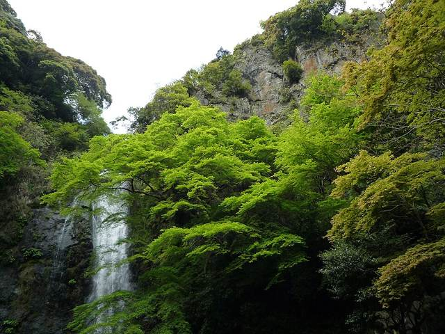
箕面大瀑布全景osakaosaka, Public domain, https://commons.wikimedia.org/wiki/File:Minoh_Taki_Zenkei.jpg 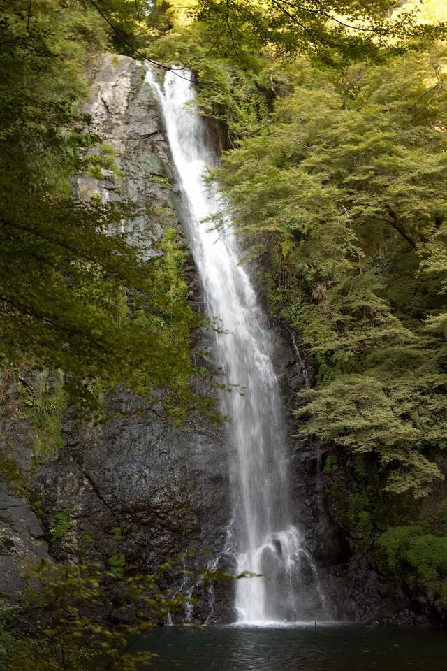
初秋的箕面大瀑布Laitr Keiows, CC BY-SA 3.0, https://commons.wikimedia.org/wiki/File:Waterfall_in_Mino_Quasi-National_Park_during_early_autumn.jpg 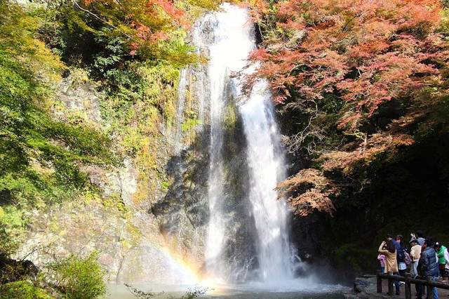
箕面大瀑布與紅葉Kanchi1979, CC BY-SA 4.0, https://commons.wikimedia.org/wiki/File:JP-Osaka-Minoo-Minootaki_-With-Rainbow.JPG 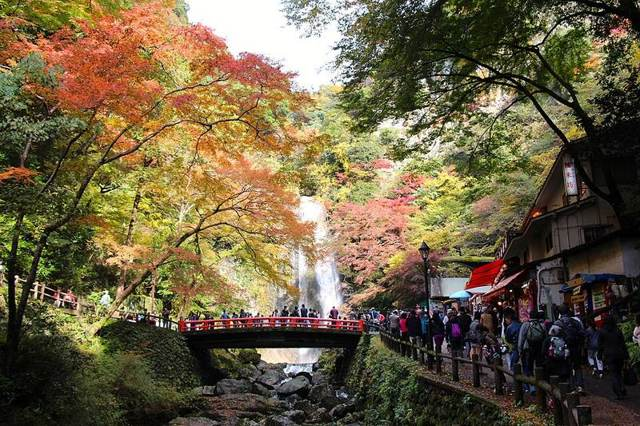
瀑布前的紅橋與遊客Kanchi1979, CC BY-SA 4.0, https://commons.wikimedia.org/wiki/File:JP-Osaka-Minoo-Minootaki_-Over-View.JPG 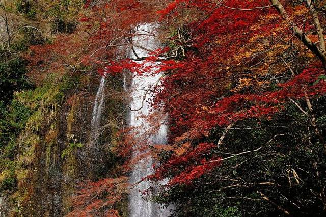
紅楓映襯的瀑布663highland, CC BY 2.5, https://commons.wikimedia.org/wiki/File:Minoh_Falls_Minoh_Osaka_pref_Japan07s3.jpg 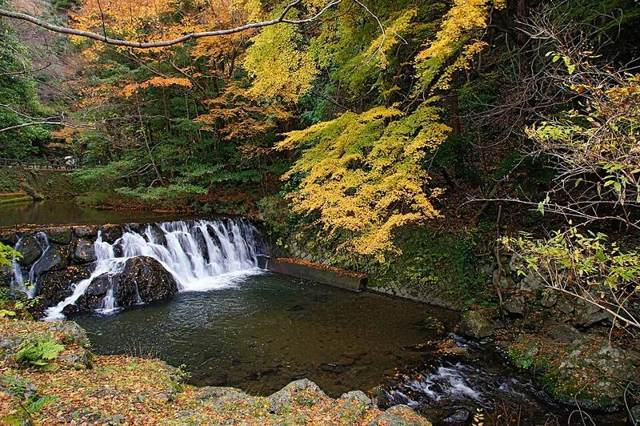
溪谷中的小瀑布與紅葉663highland, CC BY 2.5, https://commons.wikimedia.org/wiki/File:Meiji_no_Mori_Minoh_Quasi-National_Park_Minoh_Osaka_pref_Japan29s3.jpg 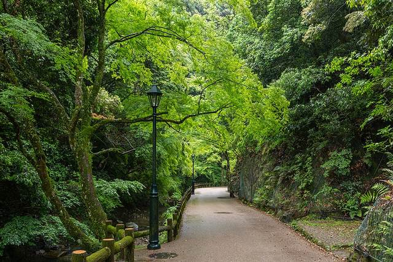
滝道林蔭步道Otto Domes, CC BY-SA 4.0, https://commons.wikimedia.org/wiki/File:Minoh-Park.jpg 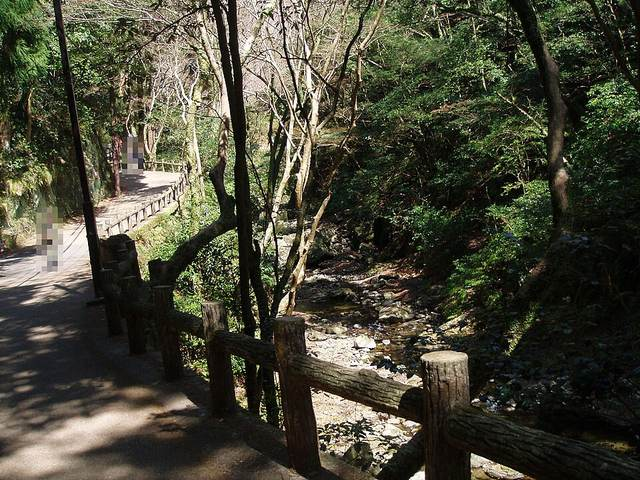
沿箕面川的滝道Merec0, CC BY 2.0, https://commons.wikimedia.org/wiki/File:Minoh_no_Takidou.jpg 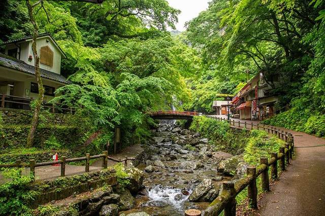
滝道旁的溪流與綠蔭Otto Domes, CC BY-SA 4.0, https://commons.wikimedia.org/wiki/File:Minoo_Park_-_Falls_Trail_-_Osaka.jpg 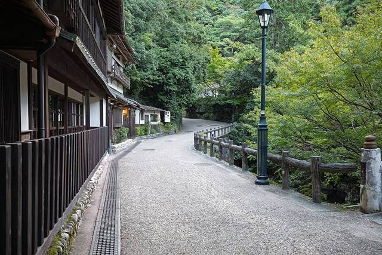
沿溪平緩的滝道Laitche, CC BY-SA 4.0, https://commons.wikimedia.org/wiki/File:Waterfall_Trail_(Promenade)_in_Meiji_no_Mori_Minō_Quasi-National_Park,_October_2024_-_5602.jpg 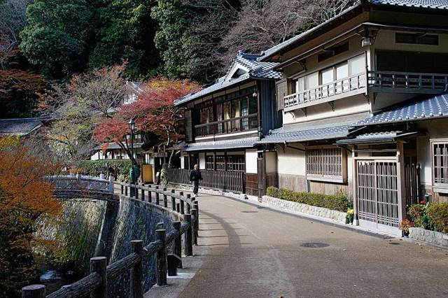
滝道沿途的老旅館663highland, CC BY 2.5, https://commons.wikimedia.org/wiki/File:Meiji_no_Mori_Minoh_Quasi-National_Park_Minoh_Osaka_pref_Japan10n.jpg 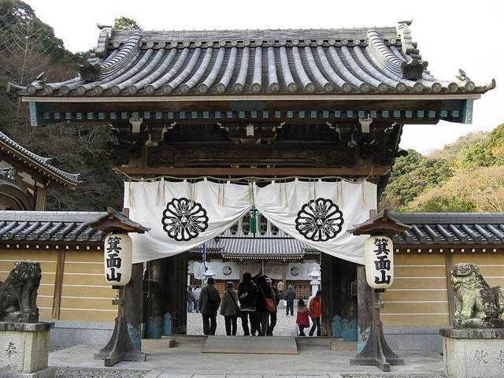
瀧安寺山門KENPEI, CC BY-SA 3.0, https://commons.wikimedia.org/wiki/File:Ryuanji_sanmon.jpg 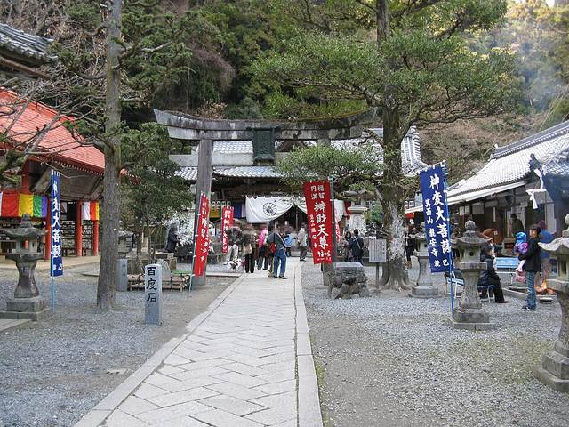
瀧安寺境內參道KENPEI, CC BY-SA 3.0, https://commons.wikimedia.org/wiki/File:Ryuanji1.jpg 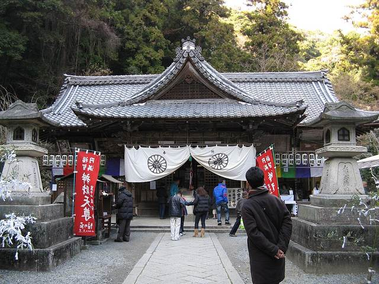
瀧安寺本堂KENPEI, CC BY-SA 3.0, https://commons.wikimedia.org/wiki/File:Ryuanji_Hondo_haiden.jpg 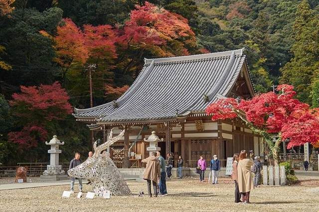
瀧安寺境內的秋色lumoplank, CC0, https://commons.wikimedia.org/wiki/File:Minoh_-_Minoh6704.jpg 現炸紅葉天婦羅Fred Cherrygarden, CC BY-SA 4.0, https://commons.wikimedia.org/wiki/File:Deep-Frying_Maple_Leaves.jpg 名產炸楓葉天婦羅Fred Cherrygarden, CC BY-SA 4.0, https://commons.wikimedia.org/wiki/File:Momiji_no_Tempura.jpg 更多說明
落差 33 公尺、大阪府唯一入選「日本瀑布百選」的箕面大滝，公園全天開放、免費。在瀑布前休息 15–20 分後，沿溪谷步道「滝道」往下走約 2.8 公里到阪急箕面站：全程平緩下坡，純走約 40 分，加上沿途停留抓 1 小時 15 分。途中有瀧安寺（日本最早的弁財天道場）、箕面公園昆蟲館、唐人戻岩、野口英世像，靠近車站的一段兩側都是賣「紅葉天婦羅」的老店。
- 箕面大滝：瀑布前的紅色欄杆是拍照位置，約 20 分
- 瀧安寺：山門、弁財天本堂，境內免費，約 15 分
- 箕面公園昆蟲館（選配）：10:00–17:00（最後入館 16:30），週二休，大人 280 日圓，約 20 分
- 紅葉天婦羅（もみじの天ぷら）：用鹽漬楓葉裹甜麵衣油炸，脆甜，60 g 約 440 日圓起；老店「久國紅仙堂」週四公休，週五六都有開
- 滝道兩旁的溪流、小瀑布與老旅館
- 紅葉：箕面公園官網寫見頃 11 月中旬～12 月初旬，2026 年紅葉情報 11/1 起才更新。10/30–11/1 大致是「青葉～開始轉色」，不要期待滿山紅
- 滝道一帶有野生獼猴：不要餵食，零食不要拿在手上
- 公園管理事務所 072-721-3014（9:30–17:00）；10/30–11/1 目前沒有封路或活動公告（截至 10/5）
12:2012:20🍽箕面溫泉午餐＋泡湯刺青須用館方遮蓋貼完全蓋住；浴場、更衣室禁止拍照
- 12:15到阪急箕面站前，步行 5 分到箕面溫泉
- 12:30入館券付午餐吃到飽（2 部 12:30–13:30）
- 13:30泡湯、休息
- 15:45離館，走回阪急箕面站
- 12:30入館券付午餐吃到飽（假日 5,100 日圓）
- 13:30泡湯、休息
- 15:45離館，走回阪急箕面站
1F大浴場「山景之湯」示意圖官網：大江戸温泉物語 箕面温泉スパーガーデン https://www.ooedoonsen.jp/minoh-spa/ 1F露天風呂官網：大江戸温泉物語 箕面温泉スパーガーデン https://www.ooedoonsen.jp/minoh-spa/ B1F大浴場「櫓檜之湯」示意圖官網：大江戸温泉物語 箕面温泉スパーガーデン https://www.ooedoonsen.jp/minoh-spa/ 1F大浴場內三溫暖官網：大江戸温泉物語 箕面温泉スパーガーデン https://www.ooedoonsen.jp/minoh-spa/ 休憩區「階梯之丘」示意圖官網：大江戸温泉物語 箕面温泉スパーガーデン https://www.ooedoonsen.jp/minoh-spa/ 休憩區「小憩木立」示意圖官網：大江戸温泉物語 箕面温泉スパーガーデン https://www.ooedoonsen.jp/minoh-spa/ 餐廳「山小屋之桌」示意圖官網：大江戸温泉物語 箕面温泉スパーガーデン https://www.ooedoonsen.jp/minoh-spa/ 箕面溫泉建築群遠景（2006）Bergmann, CC BY-SA 3.0, https://commons.wikimedia.org/wiki/File:MINOO-ONSEN.JPG 更多說明
從阪急箕面站跟著指標步行約 5 分到「大江戸温泉物語 箕面温泉スパーガーデン」（箕面市温泉町 1-1）。整修後 2026/10/1 重開：營業 9:00–23:45（最後入館 22:45），兩個大浴場依日男女交換，有露天、寢湯、三溫暖；岩盤浴與包租浴池另外收費。入館費（大人，17 點前）：平日 2,420、週六日假日 2,860、繁忙日 3,190 日圓；17 點後入館一律 2,090 日圓；另收箕面市入湯稅 75 日圓。午餐最划算的是在溫泉櫃台買「入館券付ランチバイキング」（附毛巾、浴巾）：平日 4,400、週六日假日 5,100 日圓，比分開買省 920～1,360 日圓。吃到飽在隔壁 Premium 箕面観光ホテル 1F「GRAND DINING」，11:30–14:00，採兩部入替制（1 部 11:30–12:30、2 部 12:30–13:30），不用預約、當天先到先受理。
- 12:20 左右到櫃台，買「入館券付ランチバイキング」排 2 部（12:30–13:30）
- 飯後休息一下再泡：1F「山景之湯」、B1F「櫓檜之湯」，男女依日交換
- 館內有休憩區「階梯之丘」、約 5,000 本漫畫的閱讀區，可以躺著休息
- 選配：萬博話題的「ミライ人間洗濯機」1 室 11,000 日圓（2–4 人、國中以上），只能當天在 1F 浴場案內所先到先受理
- 刺青：只有能用館方指定的付費遮蓋貼（最多 2 張）完全蓋住才可入館，否則謝絕
- 毛巾：吃到飽套票確定附毛巾＋浴巾；單買入館券是否附毛巾，官網沒寫，建議自備小毛巾或到櫃台問
- 吃到飽是先到先受理，週六可能提早額滿；滿了就只買入館券，在館內餐廳「山小屋のテーブル」用餐，或回箕面站前找餐廳
- 繁忙日名單要看官網 FAQ「日帰りプランの繁忙日」；10/31 是否算繁忙日未確認
- 館內禁止攜帶外食；浴場、更衣室全面禁止拍照
- 比較省的做法：先在滝道吃紅葉天婦羅＋站前吃午餐，17 點後再入館（2,090 日圓），但回到住宿會在 19 點以後
16:0016:00🚆阪急＋地鐵回岸里石橋阪大前轉2號線；梅田出阪急再進地鐵，約5–8分
- 16:00阪急箕面線 → 石橋阪大前 16:08 急行 → 大阪梅田 16:24
- 16:36御堂筋線 → 大國町 16:51 四つ橋線 → 岸里 16:55
- 17:00回到住宿
- 16:00阪急箕面線 → 石橋阪大前 16:08 急行 → 大阪梅田 16:24
- 16:36御堂筋線 → 大國町 16:49 四つ橋線 → 岸里 16:54
- 17:00回到住宿
🚆 阪急箕面線→寶塚線急行→御堂筋線→四つ橋線｜箕面 → 岸里｜約55分｜570円｜IC可阪急箕面站Brancacube, CC BY-SA 3.0, https://commons.wikimedia.org/wiki/File:Minoo_Station_(Osaka).jpg 箕面站 1 號線月台NatsuTV, CC0, https://commons.wikimedia.org/wiki/File:阪急箕面駅1号線ホーム.jpg 行駛箕面線的阪急電車さりと, CC BY-SA 4.0, https://commons.wikimedia.org/wiki/File:Hankyu_6000_series_6024F_between_Makiochi_and_Minoh.jpg 石橋阪大前 寶塚線站牌Niiryoku2910, CC BY-SA 4.0, https://commons.wikimedia.org/wiki/File:Ishibashi_handai-mae_station_Takarazuka_line_sign.jpg 石橋阪大前站箕面導覽NatsuTV, CC0, https://commons.wikimedia.org/wiki/File:阪急石橋阪大前駅箕面案内.jpg 阪急大阪梅田 3 樓剪票口NatsuTV, CC0, https://commons.wikimedia.org/wiki/File:阪急大阪梅田駅3階改札口.jpg 購票・進站・轉乘（點一步看照片）🎫 刷IC或買280円票
要找的標示：大阪梅田
阪急箕面站售票機・NatsuTV, CC0, https://commons.wikimedia.org/wiki/File:阪急箕面駅券売機.jpg 1. 阪急箕面站：有 IC 卡直接刷剪票口；沒有就在售票機按「大阪梅田」280 日圓。
🚆 坐3站到石橋阪大前
阪急箕面站剪票口・NatsuTV, CC0, https://commons.wikimedia.org/wiki/File:阪急箕面駅改札口.jpg 2. 進剪票口後上任何一班車（全部往石橋阪大前），坐 3 站約 6 分。
🔁 站內轉2號線
要找的標示：大阪梅田・京都方面
石橋阪大前 箕面線站牌・NatsuTV, CC0, https://commons.wikimedia.org/wiki/File:阪急石橋阪大前駅箕面線駅名標.jpg 3. 石橋阪大前下車，看箕面線站牌：「大阪梅田・京都方面」是 2 號線，跟指標走過去（不用出站）。
🚆 搭急行到大阪梅田
要找的標示：大阪梅田
石橋阪大前 寶塚線站牌・Niiryoku2910, CC BY-SA 4.0, https://commons.wikimedia.org/wiki/File:Ishibashi_handai-mae_station_Takarazuka_line_sign.jpg 4. 2 號線搭「急行／準急 大阪梅田」行，到終點大阪梅田（約 16 分）。
🚶 3樓出站轉御堂筋線
要找的標示：御堂筋線
阪急大阪梅田 3 樓剪票口・NatsuTV, CC0, https://commons.wikimedia.org/wiki/File:阪急大阪梅田駅3階改札口.jpg 5. 大阪梅田在 3 樓剪票口出站，跟著紅色「御堂筋線」指標走到地下鐵梅田站。
🚆 坐5站到大國町
要找的標示：なかもず／天王寺
Osaka Metro 售票機・MaedaAkihiko, CC0, https://commons.wikimedia.org/wiki/File:Osaka-metro_Nakamozu-STA_Ticket.jpg 6. 地鐵梅田刷 IC（或買 290 日圓票到岸里），搭往「なかもず／天王寺」方向 5 站到大國町。
🔁 大國町對面轉四つ橋線
要找的標示：住之江公園
岸里站站名標（Y18）・そらみみ, CC BY-SA 4.0, https://commons.wikimedia.org/wiki/File:Kishinosato_Station_Sign.jpg 7. 大國町 1 號線下車，同一月台對面 2 號線搭四つ橋線「住之江公園」行，2 站到岸里，從 1 號出口走回住宿約 5 分。
更多說明
15:45 離開溫泉，走回阪急箕面站。搭箕面線（全部是往石橋阪大前的區間車，約每 10 分一班）3 站到石橋阪大前，同站轉寶塚本線往「大阪梅田」方向（2 號線）的急行，到終點大阪梅田。從阪急 3 樓剪票口出來，跟著「地下鉄 御堂筋線」指標走到梅田站，搭往なかもず／天王寺方向，到大國町同月台對面轉四つ橋線「住之江公園行」，下一站花園町、再下一站就是岸里。阪急 280＋地鐵 290＝570 日圓。
- 路線
- 阪急箕面線 → 石橋阪大前轉 寶塚本線急行 → Osaka Metro 御堂筋線 → 大國町轉 四つ橋線
- 區間
- 箕面 → 岸里
- 上車
- 箕面站（終點站，停在月台的車都往石橋阪大前）；石橋阪大前 2 號線（大阪梅田方面）；梅田 御堂筋線 1 號線；大國町 1 號線下車 → 對面 2 號線
- 方向
- 石橋阪大前 → 大阪梅田 → なかもず方向 → 住之江公園方向
- 班次
- 平日：箕面 16:00 → 石橋阪大前 16:06；16:08 急行 大阪梅田行 → 16:24；梅田 16:36 御堂筋線 なかもず行 → 大國町 16:47；16:51 四つ橋線 → 岸里 16:55。假日：同樣 16:00 出發 → 大國町 16:47、16:49 四つ橋線 → 岸里 16:54。晚一班就是 16:10 出發（約 17:03 到）
- 票價
- 570 日圓（阪急 280＋地鐵 290；IC 與車票同價）
- IC 卡
- IC 卡可一路刷到底；阪急和地鐵在梅田要先出阪急剪票口、再進地鐵剪票口，各扣各的
- 有 IC 卡：箕面站剪票口直接刷，梅田出站扣 280；地鐵梅田再刷進站，岸里出站扣 290
- 買紙票：箕面站售票機買到「大阪梅田」280 日圓；到梅田後在地鐵售票機另買 290 日圓到岸里
- 不建議買兩家公司合併的「連絡乘車券」，分開買最單純
- 石橋阪大前同站轉車，不用出站
- 大國町同月台對面轉乘
- 石橋阪大前：箕面線下車後看站牌上的「大阪梅田・京都方面 ②」，走到 2 號線；往「寶塚方面 ①」是反方向
- 梅田站很大：阪急大阪梅田 3 樓剪票口 → 下到 2 樓/1 樓 → 往「地下鉄 御堂筋線 Midosuji Line」紅色指標，約 5–8 分
- 不想在大國町轉車：從阪急大阪梅田走約 10–12 分到四つ橋線「西梅田」站（起點站，有位子坐），16:45 發 → 岸里 16:59（假日 16:43 → 16:57）
- 想晚點走、吃完晚餐再回去也行：箕面線末班很晚，傍晚以後約 10–15 分一班
費用・其他走法・注意事項・來源
建議日期說明
2026-10-30（週五）：勝尾寺與滝道人較少，溫泉入館便宜 440 日圓（吃到飽套票便宜 700 日圓），午餐吃到飽也不容易額滿。10/31、11/1 一樣可行，只是人多、溫泉較貴。三天都還不是紅葉季（見頃 11 月中旬以後）。
推薦走法的交通費（成人單程合計）
| 地鐵＋北急 岸里 → 箕面萱野 IC 與車票同價 | 580 円 |
| 計程車 箕面萱野 → 勝尾寺（2 人分攤） 一車約 3,000 日圓（勝尾寺官網估算）；1 人搭就是 3,000 | 1,500 円 |
| 勝尾寺 入山志納料（大人） 高中生以上 | 500 円 |
| 箕面溫泉 入館券付ランチバイキング（平日） 含入館＋午餐吃到飽＋毛巾浴巾；週六日假日 5,100 | 4,400 円 |
| 箕面市入湯稅（日歸） 館方另收 | 75 円 |
| 阪急 箕面 → 大阪梅田 IC 與車票同價 | 280 円 |
| 地鐵 梅田 → 岸里 IC 與車票同價 | 290 円 |
| 合計 | 7,625 円 |
最省錢走法
| 地鐵＋北急 岸里 → 箕面萱野 IC 與車票同價 | 580 円 |
| 阪急巴士 30 系統 箕面萱野 → 勝尾寺 首班 9:00，只收 IC 或專用車票（信用卡）；勝尾寺約 9:25 才到 | 800 円 |
| 勝尾寺 入山志納料（大人） | 500 円 |
| 箕面溫泉 入館（平日 17 點前） 週六日假日 2,860；17 點後 2,090 | 2,420 円 |
| 箕面市入湯稅（日歸） | 75 円 |
| 阪急 箕面 → 大阪梅田 | 280 円 |
| 地鐵 梅田 → 岸里 | 290 円 |
| 合計 | 4,945 円 |
其他走法
- 原稿的天下茶屋出發：平日 07:02 堺筋線 → 動物園前 07:04／07:08 御堂筋線 → 箕面萱野 07:49；假日 07:03 → 07:52。同樣 580 日圓，但動物園前要上下樓轉乘，比岸里方案晚 5–7 分（見上方「原稿方案」）
- 不想走 4 公里山路：在勝尾寺叫計程車到「大滝上駐車場」（約 10 分，車資未確認），再步行約 15 分陡坡下到瀑布；或搭計程車直接到阪急箕面站（約 15–20 分、約 3,000 日圓），從站前沿滝道往上走到瀑布再走回來（來回約 1.5 小時）
- 預算優先：箕面萱野改搭 9:00 首班阪急巴士（800 日圓、只收 IC），勝尾寺約 9:25 到，後面行程整體延後約 1.5 小時，溫泉可改成 17 點後入館（2,090 日圓）
- 回程想少轉一次：阪急大阪梅田步行 10–12 分到四つ橋線起點「西梅田」，一路坐到岸里（多 4 分鐘，但一定有座位）
- 回程另一條：阪急寶塚線在十三轉京都線特急到淡路，再轉千里線「天下茶屋行」（直通堺筋線）一路到天下茶屋，580 日圓，10/31 查詢結果為 16:00 箕面出發 → 16:59 天下茶屋（平日未查）
- 11/1（週日）也可以：時刻與 10/31 假日相同，勝尾寺 8:00–17:00；若 2026 年點燈和 2025 年一樣從 11 月第一個週末開始，11/1 晚上勝尾寺可能有點燈（尚未公布）
要留意
- 電車時刻與月台取自 Yahoo!路線情報（私鐵 2026 年 9 月版時刻表），出發前一天請再查一次
- 箕面萱野站早上 7:50 計程車招呼站是否一定有車無法確認；GO／DiDi 在箕面地區的派車情況未確認
- 勝尾寺 → 箕面大滝 的步行路線（約 4 km、50–70 分）來自健行導遊網站與既有資料，實際走法、有無人行道請用 Google Maps 步行導航確認；勝尾寺 → 大滝上駐車場的計程車費未確認
- 箕面溫泉：單買入館券是否附毛巾、10/31 是否為「繁忙日」（3,190 日圓）官網未寫明；午餐吃到飽先到先受理，週末可能提早額滿
- 勝尾寺 2026 年秋季特別點燈日期尚未公布；紅葉見頃通常 11 月中旬～12 月上旬，10/30–11/1 大致只是開始轉色
- 石橋阪大前箕面線的到站月台號（站牌顯示轉乘寶塚方面 ①、大阪梅田方面 ②）以現場指標為準
- 勝ちダルマ價格依大小而異，未查到 2026 年價目
- 箕面公園昆蟲館開館資訊來自大阪觀光局網站，未在箕面公園官網再確認
10/31（六）・住大阪
住吉大社＋住吉公園＋天王寺 一日遊（從天下茶屋出發）
早上參拜大阪最古老的神社，午餐吃住吉老洋食，下午搭路面電車到天王寺、新世界
08:10🚆住處 → 天下茶屋 → 住吉大社（南海本線 3 站）
- 08:10出門，步行約 8 分到南海天下茶屋站（西出口）
- 08:22南海本線 關西空港行（3 號線）→ 08:27 住吉大社（3 站）
🚆 南海本線｜天下茶屋 → 住吉大社｜約5分｜180 円｜IC可朱紅反橋（太鼓橋）倒影Saigen Jiro, CC0, https://commons.wikimedia.org/wiki/File:Sumiyoshi-taisha,_Sorihashi-2.jpg 更多說明
08:10 出門，步行約 8 分到南海「天下茶屋」站西出口（比走到岸里玉出近）。搭 08:22 往關西空港的列車，3 站 5 分鐘到「住吉大社」站，出東口往東走 3 分鐘就是住吉大社西大鳥居與太鼓橋。想拍沒人的太鼓橋可以早一班出門（10 月起 6:30 開門）。
- 路線
- 南海本線（普通・停住吉大社的列車）
- 區間
- 天下茶屋 → 住吉大社
- 上車
- 天下茶屋站 3 號線（往堺・關西空港・和歌山市方面）
- 方向
- 關西空港・和歌山市 方向
- 班次
- Yahoo!乗換案内（10/31 週六）：08:22 關西空港行 → 08:27；08:37 和歌山市行 → 08:42。看清楚列車有停「住吉大社」（急行、特急、ラピート不停）
- 票價
- 180 円（IC 與車票同價）
- IC 卡
- ICOCA／Suica 等交通 IC 卡可直接刷
- 有 IC 卡：直接刷進站
- 沒 IC 卡：售票機買 180 円
- 月台電子看板確認「普通」或停靠站有「住吉大社」
08:30📍住吉大社（太鼓橋・國寶本殿・五大力石・招福貓）
- 08:30住吉大社：太鼓橋 → 本殿（第一～第四本宮）→ 五所御前找五大力石 → 楠珺社招福貓
- 09:15授與所開門（9:00）後買御守、御朱印
本宮社殿群Saigen Jiro, CC0, https://commons.wikimedia.org/wiki/File:Sumiyoshi-taisha,_keidai-2.jpg 住吉造本殿並排Hyppolyte de Saint-Rambert, CC BY 4.0, https://commons.wikimedia.org/wiki/File:Sumiyoshi-taisha_(Osaka_Sumiyoshi-ku)_Shrine_hdsr_S5_b04.jpg 楠珺社的招福貓住吉大社（經樂吃購！日本） 更多說明
全日本約 2,300 座住吉神社的總本社。建議順序：太鼓橋拍照 → 本殿（第一至第四本宮，國寶「住吉造」，正門朝西面向大阪灣）→ 五所御前在石柵裡找寫著「五」「大」「力」的三顆小石頭 → 楠珺社看招福貓（單數月舉左手招人緣、雙數月舉右手招財）→ 9 點授與所開門後再買御守、御朱印（先參拜再領授與品）。
- 太鼓橋坡度約 48 度，下橋比上橋可怕，雨天易滑要抓扶手
- 五大力石：找齊三顆後到授與所買專用御守袋裝起來
- 兔子御守、每月換圖案的刺繡御朱印
- 授與所 9:00–17:00；10 月起外周門 16:00 關
10:00📍住吉公園・汐かけ横丁
- 10:00住吉公園：汐かけ道、高燈籠；汐かけ横丁「兎茶や」（10:00 開）
汐かけ道大阪觀光局 OSAKA-INFO 高燈籠大阪觀光局 OSAKA-INFO 更多說明
住吉大社西側、大阪最古老的公園（1873 年）。走一段汐かけ道（大社以前的表參道），看國道 26 號旁的高燈籠。汐かけ横丁的「兎茶や」10:00 開門，可以自己炭火烤糰子；等一下要吃午餐的話，兩人分一份就好。
11:00🍽午餐：洋食 やろく レストラン本店
- 11:00洋食やろく 午餐（玉子可樂餅；11:00 開，週三休）
- 11:45步行約 8 分到阪堺電車「住吉鳥居前」
更多說明
創業 90 多年的住吉老洋食店，招牌玉子可樂餅（白醬拌水煮蛋、火腿，放上鮮蝦去炸）連續 4 年拿日本比賽金賞；想多吃幾樣可點含炸牛排的「やろく盛り合わせ」。午餐 11:00–13:30，週三休（樂吃購 2026/3 資料，待確認）。
- 備案：鰻まむし いづもや（11:30 開、賣完為止、只收現金，店主一人烤要等），或到天王寺、新世界再吃串炸
11:53🚆住吉鳥居前 → 天王寺駅前（阪堺電車）
- 11:53阪堺電車 天王寺駅前行 → 12:12 天王寺駅前（約 6 分一班）
🚆 阪堺電車｜住吉鳥居前 → 天王寺駅前｜約19分｜240 円｜IC可更多說明
從やろく步行約 8 分到阪堺電車「住吉鳥居前」電車站（住吉大社正門前的馬路中央），搭往「天王寺駅前」的路面電車，19 分鐘到終點，下車後就是天王寺站與 HARUKAS。
- 路線
- 阪堺電車（路面電車）天王寺駅前行
- 區間
- 住吉鳥居前 → 天王寺駅前
- 上車
- 住吉鳥居前 往北（天王寺駅前・恵美須町方面）的月台；看車頭行先「天王寺駅前」
- 方向
- 天王寺駅前 方向（不要搭恵美須町行）
- 班次
- Yahoo!乗換案内（10/31 週六）：11:47、11:53、11:59 發 → 12:06、12:12、12:18 到，約 6 分一班
- 票價
- 240 円（均一價，下車時付）
- IC 卡
- ICOCA／Suica 可用：後門上車、前門下車時在運賃箱旁刷卡
- 後門上車
- 下車時從前門下，刷 IC 卡或把 240 円投進運賃箱
- 一日券「てくてくきっぷ」700 円，這天只搭一次不划算
- 不想坐路面電車：南海「住吉大社」11:54 → 新今宮轉 JR → 12:13 天王寺（390 円）
12:20📍天王寺：てんしば・阿倍野 HARUKAS
- 12:20てんしば草地、阿倍野 HARUKAS（展望台 HARUKAS 300 可選）
てんしば草地與 HARUKAS大阪觀光局 OSAKA-INFO 仰望阿倍野HARUKAS大樓松岡明芳, CC BY-SA 3.0, https://commons.wikimedia.org/wiki/File:Abeno_Harukas_0306,2014_DSCF9632.JPG 更多說明
天王寺站對面的てんしば是約 7,000 ㎡ 的草地，周邊有咖啡與餐廳，可以坐著休息看 HARUKAS。想看大阪全景就上阿倍野 HARUKAS 的 HARUKAS 300 展望台（大人 2,200 円，9:00–22:00）。旁邊還有天王寺動物園（800 円，最後入園 16:00）。
14:00📍通天閣・新世界
- 14:00步行約 10 分到通天閣・新世界（通天閣展望台需預約時段）
- 16:30走回天王寺站（約 10 分）
藍天下的通天閣Mc681, CC BY-SA 4.0, https://commons.wikimedia.org/wiki/File:New_Tsutenkaku_in_201409_001.JPG 更多說明
從てんしば往西穿過天王寺公園，步行約 10 分到新世界。通天閣一般展望台大人 1,500 円，需先預約入場時段。新世界一帶有串炸老店，晚一點也可以在這裡吃晚餐。累了的話旁邊就是 SPA WORLD。
17:01🚇天王寺 → 大國町 → 岸里（地鐵）
- 17:01御堂筋線 → 大國町轉四つ橋線 → 17:12 岸里，步行 5 分到住處
🚇 Osaka Metro 御堂筋線 → 大國町轉 四つ橋線｜天王寺 → 岸里｜約11分｜240 円｜IC可更多說明
走回天王寺站（從新世界約 10 分；或從動物園前站上車也可以），搭御堂筋線 1 站到大國町，在同一月台對面轉四つ橋線 3 站到岸里，2 號出口步行 5 分到住處。
- 路線
- Osaka Metro 御堂筋線 → 大國町轉 四つ橋線
- 區間
- 天王寺 → 岸里
- 上車
- 天王寺站 御堂筋線（往新大阪・千里中央方面）；大國町 對面月台轉四つ橋線（往住之江公園）
- 方向
- 梅田 方向 → 大國町轉 住之江公園 方向
- 班次
- Yahoo!乗換案内（10/31 週六）：17:01 → 17:12 岸里（11 分）；班次很多，晚一點也沒問題
- 票價
- 240 円（IC 與車票同價）
- IC 卡
- ICOCA／Suica 可直接刷
- 有 IC 卡：直接刷
- 沒 IC 卡：售票機買 240 円
費用・其他走法・注意事項・來源
建議日期說明
2026-10-31（週六）：箕面一日遊排在 10/30（五），這天空著。住吉大社離住處只有南海 3 站（5 分鐘），早上出門不用趕。11/1（週日）一樣可行，時刻相同（都是土休日時刻表）；11/1 是每月 1 日，住吉大社 6:00 就開門，當地人來參拜「月次祭」會多一點。
推薦走法的交通費（成人單程合計）
| 南海 天下茶屋 → 住吉大社 IC 與車票同價 | 180 円 |
| 阪堺電車 住吉鳥居前 → 天王寺駅前 均一價；下車時付（IC 可） | 240 円 |
| 地鐵 天王寺 → 岸里（大國町轉四つ橋線） IC 與車票同價 | 240 円 |
| 合計 | 660 円 |
其他走法
- 11/1（週日）也行：南海、阪堺、地鐵都是同樣的土休日時刻；11/1 住吉大社 6:00 開門
- 只排半日（樂吃購建議）：住吉大社＋住吉公園後回住處或去難波，下午自由活動
- 一日逛街版（樂吃購建議）：上午住吉大社 → 中午回難波吃飯 → 下午心齋橋、道頓堀購物
- 10/31 是萬聖節：晚上道頓堀、心齋橋、難波一帶人潮非常擠，想去 MIRACLE WORLD（週六開到凌晨 1 點）要有心理準備
要留意
- 電車時刻取自 Yahoo!乗換案内（2026/10/31 週六），出發前一天再查一次
- やろく、兎茶や的營業時間取自樂吃購 2026/3 文章，未在官網確認
- 網站「地鐵怎麼去」的路線系統沒有南海住吉段與阪堺電車，會建議走地鐵玉出站；這天請照本頁的南海＋阪堺走法
11/1（日）・住大阪
MIRACLE WORLD＋mont-bell 大尺碼＋潛水用品（なんば → 心斎橋 → 梅田）
早上先看難波的 MIRACLE WORLD 數位藝術館，再逛 XXL 推薦前 3 名的 mont-bell，下午到梅田逛 NAVY COMPANY、mic21，一路往北不走回頭路
- MIRACLE WORLD 先網路買 9:00–9:30 時段票（只收信用卡）
- mont-bell XXL 推薦 1–3 依序逛，沒貨請店員調貨保留
- NAVY COMPANY 週三休、mic21 無休；今天週日都有開
- mont-bell 免稅帶護照；11/1 起先付後退
08:55🚆南海到なんば天下茶屋 2 站 4 分；走なんばウォーク B21 出口約 8 分
- 08:55出門，步行約 8 分到南海天下茶屋站（西出口）
- 09:08南海本線 なんば行 → 09:12 なんば（2 站）
- 09:12從南海なんば往なんばウォーク B21 出口走約 8 分，難波東方飯店地下 1 樓
🚆 南海本線 なんば行｜天下茶屋 → なんば｜約5分｜180 円｜IC可更多說明
步行約 8 分到南海「天下茶屋」站西出口，搭往なんば的列車，2 站 4 分鐘到終點なんば。出剪票口往地下街なんばウォーク走到 B21 出口，出地面直走約 30 秒就是難波東方飯店（なんばオリエンタルホテル），MIRACLE WORLD 在地下 1 樓。從南海なんば站走過去約 8 分。
- 路線
- 南海本線 なんば行
- 區間
- 天下茶屋 → なんば（南海線）
- 上車
- 天下茶屋站 2 號線（往なんば）
- 方向
- なんば 方向（終點）
- 班次
- Yahoo!乗換案内（11/1 週日）：09:08 なんば行 → 09:12 なんば；09:07 高野線急行 → 09:13 也可以。南海這段班次很多，晚一班也沒關係
- 票價
- 180 円（IC 與車票同價）
- IC 卡
- ICOCA／Suica 等交通 IC 卡可直接刷
- 有 IC 卡：直接刷進站
- 沒 IC 卡：售票機買 180 円
- なんば是終點站，坐到底就對了
09:20📍MIRACLE WORLD 數位藝術館9:00 開門人最少；約 1 小時，10:40 前出來
- 09:20MIRACLE WORLD 數位藝術館（9:00 開；8 個展間約 45 分–1 小時）
- 10:40走約 5 分到なんばCITY 南館地下 1 樓（相距約 200m）
Room 3 DIAMOND 2：黑鏡地板上的鑽石無限空間來源：官方 WEB 手冊, https://mwguide.top/ Room 4 NATURE：走過地板，鯉魚與水母跟著游來源：官方 WEB 手冊, https://mwguide.top/ 更多說明
大阪第一座常設室內數位藝術館，8 個展間用影像、聲音、觸覺、香氣串成一條故事路線，鏡面、LED、投影會隨你走動或觸摸而變化。規模比 teamLab 小，約 45 分–1 小時看完。早上剛開門人最少，拍照最好拍。
- Room 3 DIAMOND 2：黑鏡地板讓鑽石影像上下無限延伸，可坐「國王椅」拍照
- Room 4 NATURE：走過地板，鯉魚與水母會跟著游
- Room 5 SAKURA：摸牆面就開出一枝櫻花
- Room 8 SKY：360 度全面 LED，約 5 分鐘的飛行、墜落體感
- 先在官方網站買指定時段的票（只收信用卡）；前一天 23:00 後就不能取消
- 免費置物櫃可以放包包；禁止閃光燈、腳架、自拍棒
- 出場後不能再入場；10:40 前出來，走 5 分到なんばCITY 剛好 mont-bell 開門
11:00📍① mont-bell なんばCITYXXL 推薦 2；走 5 分，11:00 開門
- 11:00① mont-bell なんばCITY店（11:00 開；XXL 推薦 2）

なんばCITY 南館地下 1 樓的店門口來源：mont-bell 官網店舖頁, https://store.montbell.jp/search/shopinfo/?shop_no=678546 更多說明
なんばCITY 南館地下 1 樓，官網寫 200 坪以上，是大阪市內第二大的 mont-bell。從 MIRACLE WORLD 走約 5 分（相距約 200m），11:00 開門，一開門就到人最少。先找想要的款式試穿 XXL，這間沒有的話記下品名和顏色，等一下到大丸心斎橋再找。
- 營業 11:00–21:00
- 依面積推測 XXL 第二齊（官方沒有公布各店庫存）
- 出門前可先在 mont-bell 網店商品頁按「直営店在庫状況を見る」，選 XXL、大阪府，就知道哪間店有貨
- 要找的貨在別間店：請店員打電話調貨或保留（「XXLの在庫を取り置きできますか」）
11:47🚇御堂筋線 1 站到心斎橋或走心斎橋筋商店街約 15 分
- 11:47御堂筋線 箕面萱野行 → 11:57 心斎橋（1 站；或走心斎橋筋約 15 分）
🚇 Osaka Metro 御堂筋線 箕面萱野行｜なんば → 心斎橋｜約1分｜190 円｜IC可更多說明
從なんばCITY 走地下街到地下鐵御堂筋線なんば站，搭往梅田・新大阪方向 1 站到心斎橋，走 5 號出口方向就是大丸心斎橋店。天氣好也可以直接走心斎橋筋商店街往北約 15 分，邊走邊逛。
- 路線
- Osaka Metro 御堂筋線 箕面萱野行
- 區間
- なんば → 心斎橋
- 上車
- なんば站 2 號線（往梅田・新大阪）
- 方向
- 梅田・新大阪 方向
- 班次
- Yahoo!乗換案内（11/1 週日）：11:56 → 11:57 心斎橋；約 3–4 分一班
- 票價
- 190 円（IC 與車票同價）
- IC 卡
- ICOCA／Suica 可直接刷
- 有 IC 卡：直接刷
- 沒 IC 卡：售票機買 190 円
12:00📍② mont-bell 大丸心斎橋XXL 推薦 1；大阪唯一大型店，南館 6 樓
- 12:00② mont-bell 大丸心斎橋店 南館 6 樓（XXL 推薦 1，大阪唯一大型店）

南館 6 樓賣場入口來源：mont-bell 官網店舖頁, https://store.montbell.jp/search/shopinfo/?shop_no=678624 更多說明
大丸心斎橋店南館 6 樓，約 260 坪，是大阪市內唯一被官網標為「大型店舗」的 mont-bell，款式和尺碼最可能最齊。想一次買齊外套、刷毛衣、褲子就在這間決定。
- 營業 11:00–20:00
- 大阪市內最大、唯一的「大型店舗」
- 大丸是百貨公司，免稅手續可能要到館內免稅櫃台辦，結帳時問店員
- 今天一路往北不走回頭路，買了就直接帶走；東西多的話可以在梅田站的置物櫃先放
12:40🍽心斎橋午餐週日中午人多，等太久就換一間
- 12:40午餐：大丸心斎橋或心斎橋筋一帶
更多說明
大丸心斎橋本館有餐廳樓層和地下食品樓層，週日中午人多，等位太久就到心斎橋筋商店街或御堂筋旁的店吃。13:18 那班趕不上就搭下一班，御堂筋線 3–4 分一班。
13:18🚇御堂筋線到梅田3 站 6 分；出北改札往 JR 大阪站
- 13:18御堂筋線 箕面萱野行（2 號線）→ 13:24 梅田
🚇 Osaka Metro 御堂筋線 箕面萱野行｜心斎橋 → 梅田｜約6分｜240 円｜IC可更多說明
回心斎橋站搭御堂筋線往新大阪方向，3 站 6 分鐘到梅田。出北改札往 JR 大阪站方向走約 5 分，就是ルクアイーレ。
- 路線
- Osaka Metro 御堂筋線 箕面萱野行
- 區間
- 心斎橋 → 梅田
- 上車
- 心斎橋站 2 號線（往梅田・新大阪）
- 方向
- 梅田・新大阪 方向
- 班次
- Yahoo!乗換案内（11/1 週日）：13:18 → 13:24 梅田；約 3–4 分一班
- 票價
- 240 円（IC 與車票同價）
- IC 卡
- ICOCA／Suica 可直接刷
- 有 IC 卡：直接刷
- 沒 IC 卡：售票機買 240 円
- 梅田出「北改札」比較近 JR 大阪站
13:35📍③ mont-bell ルクアXXL 推薦 3；ルクアイーレ 6 樓
- 13:35③ mont-bell ルクア大阪店（ルクアイーレ 6 樓；XXL 推薦 3）

ルクアイーレ 6 樓的店門口來源：mont-bell 官網店舖頁, https://store.montbell.jp/search/shopinfo/?shop_no=678586 更多說明
JR 大阪站的ルクアイーレ 6 樓，取扱品項 12 類，梅田兩間裡比較齊。前面兩間沒找到的尺碼可以在這裡再試一次。
- 營業 10:30–20:30
14:15📍うめきた店（可跳過）品項最少；前面買到就直接走
- 14:15（順路可選）mont-bell うめきた店（グランフロント大阪南館 5 樓）

グランフロント大阪南館 5 樓的店門口來源：mont-bell 官網店舖頁, https://store.montbell.jp/search/shopinfo/?shop_no=678503 更多說明
從ルクア走 2 樓連通道約 5 分到グランフロント大阪南館 5 樓。品項是市內最少的一間，XXL 大概不多；前面都買到了就跳過，直接往 NAVY COMPANY 走。
- 營業 11:00–21:00
14:45📍NAVY COMPANY自由潛水、魚槍；帶現金
- 14:45往東走約 10 分到 NAVY COMPANY（自由潛水・魚槍；週日有開）
更多說明
從グランフロント往東，穿過阪急大阪梅田站北側到茶屋町、鶴野町，走約 10 分。1972 年創業的老店，強項是自由潛水、魚槍、長蛙鞋，也能訂製防寒衣。只賣新品（OUTLET 是出清新品）。
- 營業 11:00–21:00，週三休（11/1 週日有開）
- 官網沒寫能不能刷卡、免稅，帶現金比較保險
15:30📍mic21 梅田店2 樓重裝備；可免稅、刷卡
- 15:30往南走約 8 分到 mic21 梅田店（2 樓是調節器、BCD）
- 16:45結束，準備回住處
調節器、BCD 重裝備區來源：mic21 官網 梅田店頁, https://www.mic21.com/shop/show/shop/7.html 更多說明
從 NAVY COMPANY 往南走約 8 分（東梅田站附近）。自稱關西最大級的潛水用品店：調節器、BCD 等重裝備在 2 樓，面鏡、蛙鞋、防寒衣、電腦錶、水中相機也很多。只賣新品，可免稅、可刷卡，今天要買新品的話在這裡決定。
- 營業 12:00–20:00，全年無休
- 可以拿舊器材來折抵（下取り）
- 想找二手：先打電話跟ボヌール約看 ヤフオク 上的貨（見「其他走法」）
17:06🚇地鐵回岸里大國町對面月台轉四つ橋線
- 17:06回住處：梅田 御堂筋線 → 大國町轉四つ橋線 → 17:24 岸里，步行 5 分
🚇 Osaka Metro 御堂筋線 → 大國町轉 四つ橋線｜梅田 → 岸里｜約18分｜290 円｜IC可更多說明
從 mic21 往西走約 5 分到地下鐵御堂筋線梅田站，搭往天王寺方向到大國町，在同一月台對面轉四つ橋線 2 站到岸里，2 號出口步行 5 分到住處。
- 路線
- Osaka Metro 御堂筋線 → 大國町轉 四つ橋線
- 區間
- 梅田 → 岸里
- 上車
- 梅田站 1 號線（往なんば・天王寺）；大國町 對面月台轉四つ橋線（往住之江公園）
- 方向
- 天王寺 方向 → 大國町轉 住之江公園 方向
- 班次
- Yahoo!乗換案内（11/1 週日）：17:06 → 17:17 大國町 17:19 → 17:24 岸里（18 分）；班次很多
- 票價
- 290 円（IC 與車票同價）
- IC 卡
- ICOCA／Suica 可直接刷
- 有 IC 卡：直接刷
- 沒 IC 卡：售票機買 290 円
費用・其他走法・注意事項・來源
建議日期說明
2026-11-01（週日）：大阪的最後一天。MIRACLE WORLD 週日 9:00–23:00（最後入場 22:00），早上剛開門人最少；mont-bell 11:00 開門，看完走 5 分鐘就到。NAVY COMPANY 週三休、mic21 全年無休，週日都有開。隔天 11/2 是換宿日，買的東西今晚就能先裝箱。
推薦走法的交通費（成人單程合計）
| 南海 天下茶屋 → なんば IC 與車票同價；下車後走到 MIRACLE WORLD、再走到なんばCITY 都不用搭車 | 180 円 |
| 地鐵 なんば → 心斎橋（御堂筋線 1 站） 用走的（心斎橋筋商店街約 15 分）就免費 | 190 円 |
| 地鐵 心斎橋 → 梅田（御堂筋線） IC 與車票同價 | 240 円 |
| 地鐵 梅田 → 岸里（大國町轉四つ橋線） | 290 円 |
| 合計 | 900 円 |
其他走法
- 想看二手潛水器材：先打電話給ボヌール（城東區），說「ヤフオクに出している中古品を店で見たい」約好時間。mic21 之後從東梅田搭谷町線往大日，太子橋今市轉今里筋線（16:33 → 17:01 新森古市，290 円），步行約 2 分；回程 18:33 → 19:12 岸里（緑橋、本町轉 2 次，340 円）
- 只要 mont-bell：逛完 ① ② 後，阿倍野的あべの店（XXL 推薦 4，營業到 21:00）也離住處近，從天王寺搭地鐵約 10 分回岸里
- 只要潛水用品：直接從岸里搭四つ橋線到西梅田（約 16 分），走到 mic21、NAVY COMPANY；兩間都開到 20:00 以後，下午再出門也來得及
- MIRACLE WORLD 改到晚上：早上照原本 10:30 出門直接逛 mont-bell；mic21 之後 16:51 從梅田搭御堂筋線到なんば（240 円），晚餐後去 MIRACLE WORLD（週日最後入場 22:00），看完從南海なんば搭到天下茶屋（180 円），走回住處。回住處約 20 分
- 早上來不及 8:55 出門：MIRACLE WORLD 一樣可以 9:30–10:00 入場，看快一點（約 45 分），mont-bell なんばCITY 晚一點到也沒關係，後面時間整體往後推
要留意
- mont-bell 的「XXL 推薦」順序是依官網的「大型店舗」標記和店面面積推測，官方沒有公布各店 XXL 庫存；出門前用網店的「直営店在庫状況を見る」查最準
- 街のダイビング屋さん（長堀橋）已停業，不要排進去